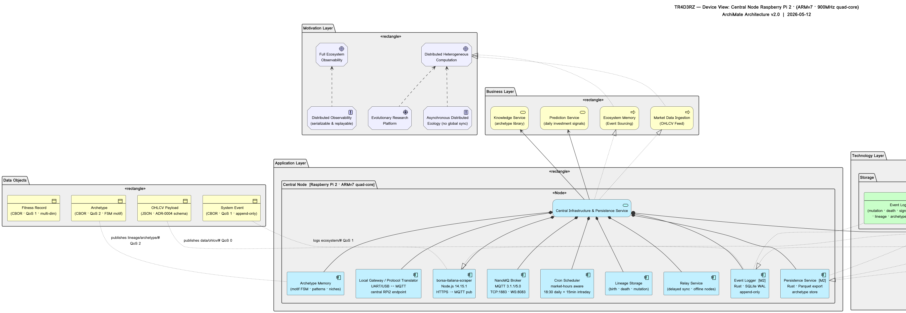

TR4D3RZ — Interactive ArchiMate Device View · Click any element for details
| Active Structure | Behavior | Passive Structure | Motivation | |
|---|---|---|---|---|
| Motivation Layer |
Distributed Heterogeneous
Computation Full Ecosystem
Observability Distributed Observability
(serializable & replayable) Asynchronous Distributed
Ecology (no global sync) Evolutionary Research
Platform |
|||
| Business Layer |
Ecosystem Memory
(Event Sourcing) Knowledge Service
(archetype library) |
System Event
(CBOR · QoS 1 · append-only) Fitness Record
(CBOR · QoS 1 · multi-dim) Archetype
(CBOR · QoS 2 · FSM motif) |
||
| Application Layer |
Lineage Storage
(birth · death · mutation) Archetype Memory
(motif FSM · patterns · niches) Event Logger
(mutation · signal · migration) Relay Service
(delayed sync · offline nodes) |
Persistence Service
|
||
| Technology Layer |
Raspberry Pi 2
(ARMv7 · 900MHz) Rust Runtime
(tr4d3rz-core · evolution · messaging) |
MQTT Service
(TCP:1883 · WS:8083) |
SQLite Database
(WAL mode · event log · archetypes) Parquet Files
(large datasets · historical archive) Event Log
(mutation · death · signal · migration · lineage · archetype_creation) |
